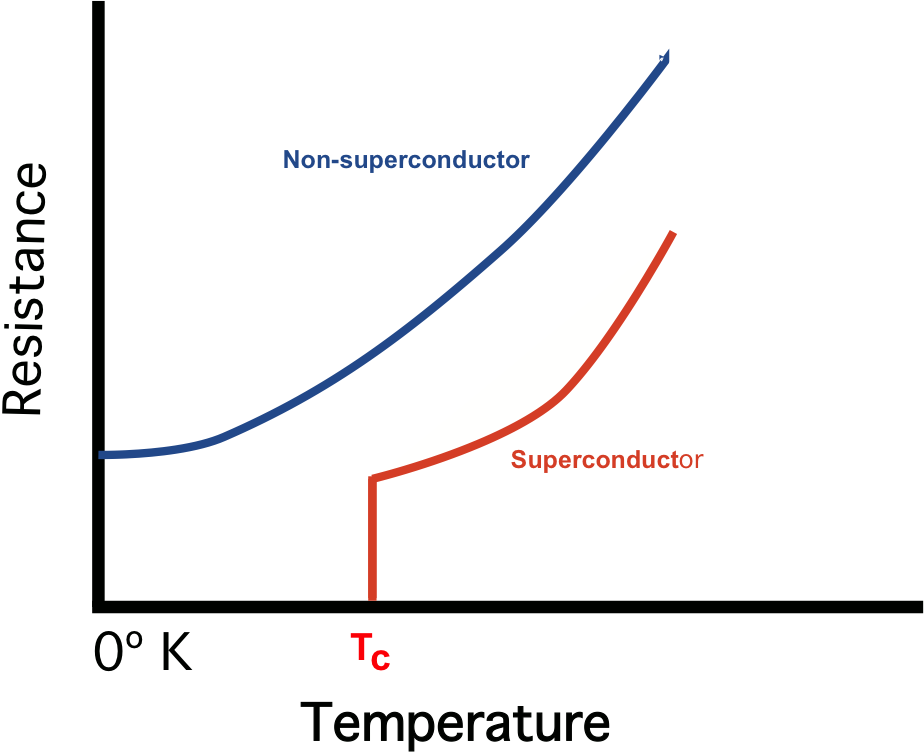
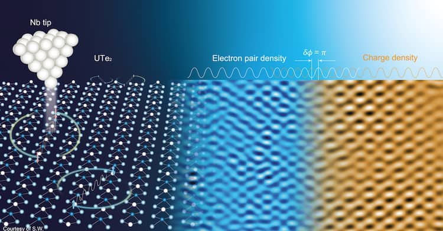

|Materials Science and Engineering |Electrical Properties |
-MARCH 16, 2024
SUPERCONDUCTIVITY

Superconductivity is the complete disappearance of all electrical resistance at low temperatures.
Although superconductivity was discovered in 1911, it was not well under- stood on a theoretical basis until 1957. That year, the American physicists John Bardeen, Leon Cooper, and Robert Schrieffer published the theory of super- conductivity, now called the BCS theory, that earned them the Nobel Prize in physics in 1972. (It was Bardeen’s second; he shared his first for his work on the development of the transistor.)

The key to the BCS theory is an interac- tion between pairs of conduction electrons, called Cooper pairs, caused by an interaction with the positive ions of the crystal. Here’s a rough picture of what happens. A free electron exerts attractive forces on nearby positive ions, pull- ing them slightly closer together. The resulting slight concentration of positive charge then exerts an attractive force on another free electron with momentum opposite to the first. At ordinary temperatures this electron-pair interaction is very small in comparison to energies of thermal motion, but at very low tem- peratures it is significant.

Bound together this way, the pairs of electrons cannot individually gain or lose very small amounts of energy, as they would ordinarily be able to do in a partly filled conduction band. Their pairing gives an energy gap in the allowed electron quantum levels, and at low temperatures there is not enough collision energy to jump this gap. Therefore the electrons can move freely through the crystal with- out any energy exchange through collisions—that is, with zero resistance.

Since 1987 physicists have discovered a number of compounds that remain superconducting at temperatures above 77 K (the boiling point of liquid nitrogen). The original pairing mechanism of the BCS theory cannot explain the properties of these high-temperature superconductors. Instead, it appears that electrons in these materials form pairs due to magnetic interactions between their spins.
Superconductors are promising candidate materials for devising fundamental circuit elements of electronic, spintronic, and quantum technologies. One such example is a superconducting diode,in which supercurrent flows along one direction only, that promise dissipationless superconducting and semiconducting-superconducting hybrid technologies.
Superconducting magnets are some of the most powerful electromagnets known. They are used in MRI/NMR machines, mass spectrometers, the beam-steering magnets used in particle accelerators and plasma confining magnets in some tokamaks. They can also be used for magnetic separation, where weakly magnetic particles are extracted from a background of less or non-magnetic particles, as in the pigment industries. They can also be used in large wind turbines to overcome the restrictions imposed by high electrical currents, with an industrial grade 3.6 megawatt superconducting windmill generator having been tested successfully in Denmark.
In the 1950s and 1960s, superconductors were used to build experimental digital computers using cryotron switches.More recently, superconductors have been used to make digital circuits based on rapid single flux quantum technology and RF and microwave filters for mobile phone base stations.
Popular Articles

Programmable Matter
The fiction and real deal behind matter that can change its physical properties.Proposed digital material having computation, sensing, actuation, and display as continuous properties active over its whole extent.
October 30, 2023

Nanomaterials
Materials tend to show different properties under smaller dimensions .For example, materials that are opaque in the macroscopic domain may become transparent on the nanoscale; chemically stable materials become combustible, and electrical insulators become conductors etc.
March 17, 2024

Quantum Dots
Man-made semiconductor nanoscale crystals that have the ability to convert a spectrum of light into different colors.
March 17, 2024

Material formation
The emergence of materials at the beginning of time, why materials are what they are.
March 17, 2024